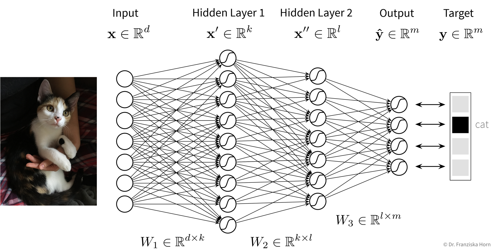
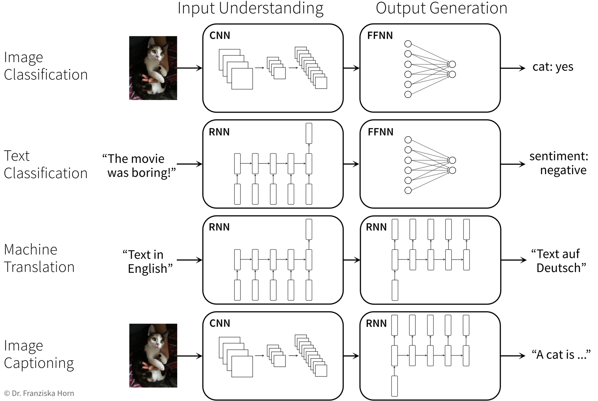

Deep Learning
“Deep Learning” describes the subfield of machine learning concerned with neural network models.
Basic Math \[ \small \begin{aligned} \begin{pmatrix} W_{11} & W_{12} & \cdots & W_{1j}\\ W_{21} & W_{22} & \cdots & W_{2j}\\ \vdots & \vdots & \ddots & \vdots\\ W_{i1} & W_{i2} & \cdots & W_{ij}\\ \end{pmatrix} \end{aligned} \]
Dangerous Artificial Intelligence \[ \small \begin{aligned} \begin{pmatrix} W_{11} & W_{12} & \cdots & W_{1j}\\ W_{21} & W_{22} & \cdots & W_{2j}\\ \vdots & \vdots & \ddots & \vdots\\ W_{i1} & W_{i2} & \cdots & W_{ij}\\ \end{pmatrix} \cdot \begin{pmatrix} W_{11} & W_{12} & \cdots & W_{1k}\\ W_{21} & W_{22} & \cdots & W_{2k}\\ \vdots & \vdots & \ddots & \vdots\\ W_{j1} & W_{j2} & \cdots & W_{jk}\\ \end{pmatrix} \cdot \begin{pmatrix} W_{11} & W_{12} & \cdots & W_{1l}\\ W_{21} & W_{22} & \cdots & W_{2l}\\ \vdots & \vdots & \ddots & \vdots\\ W_{k1} & W_{k2} & \cdots & W_{kl}\\ \end{pmatrix} \cdot \begin{pmatrix} W_{11} & W_{12} & \cdots & W_{1m}\\ W_{21} & W_{22} & \cdots & W_{2m}\\ \vdots & \vdots & \ddots & \vdots\\ W_{l1} & W_{l2} & \cdots & W_{lm}\\ \end{pmatrix} \end{aligned} \]
Read on if you‚Äôre comfortable with a bit of math. ü§ì
Neural Networks
Intuitive Explanation of Neural Networks
[Adapted from: “AI for everyone” by Andrew Ng (coursera.org)]
Let’s say we have an online shop and are trying to predict how much of a product we will sell in the next month. The price we are willing to sell the product for will obviously influence the demand, as people are trying to get a good deal, i.e., the lower the price, the higher the demand; a negative correlation that can be captured by a linear model. However, the demand will never be below zero (i.e., when the price is very high, people wont suddenly return the product), so we need to adapt the model such that the predicted output is never negative. This can be achieved by applying the max function, in this context also called a nonlinear activation function, to the output of the linear model, so that now when the linear model would return a negative value, we instead predict 0.

This functional relationship can be visualized as a circle with one input (price) and one output (demand), where the S-curve in the circle indicates that a nonlinear activation function is applied to the result. We will later see these circles as single units or “neurons” of a neural network.
To get better results, we can extend the model and use multiple input features for the prediction:

To improve the performance even further, we could now manually construct more informative features from the original inputs by combining them in meaningful ways (→ feature engineering) before computing the output:

While in this toy example, it was possible to construct such features manually, the nice thing about neural networks is that they do exactly that automatically: By using multiple layers, i.e., stacking multiple linear models (with nonlinear activation functions) on top of each other, it is possible to create more and more complex combinations of the original input features, which can improve the performance of the model. The more layers the network uses, i.e., the “deeper” it is, the more complex the resulting feature representations.
Since different tasks and especially different types of input data benefit from different feature representations, there exist different types of neural network architectures to accommodate this, e.g.
- Feed Forward Neural Networks (FFNNs), also called Multi-Layer Perceptrons (MLPs), for ‘normal’ (e.g., structured) data
- Convolutional Neural Networks (CNNs) for images
- Recurrent Neural Networks (RNNs) for sequential data like text or time series
NN architectures
Similar to how domain-specific feature engineering can result in vastly improved model performances, it pays off to construct a neural network architecture tailored to the task.
Feed Forward Neural Network (FFNN)
This is the original and most straightforward neural network architecture, which we’ve already seen in the initial example, only that in practice such a model usually has a few more layers and units per layer.

You can play around with a small neural network here to see how it behaves when you, for example, add more units or layers.
Convolutional Neural Network (CNN)
Manual feature engineering for computer vision tasks is incredibly difficult. While humans recognize a multitude of objects in images without effort, it is hard to describe why we can identify what we see, e.g., which features allow us to distinguish a cat from a small dog. Deep learning had its first breakthrough success in this field, because neural networks, in particular CNNs, manage to learn meaningful feature representations of visual information through a hierarchy of layers.
Convolutional neural networks are very well suited for processing visual information, because they can operate on the 2D images directly and utilize the fact that images are composed of a lot of local information (e.g., eyes, nose, and mouth are all localized components of a face).

General Principles & Advanced Architectures
When trying to solve a problem with a NN, always consider that the network needs to understand the inputs, as well as generate the desired outputs:
